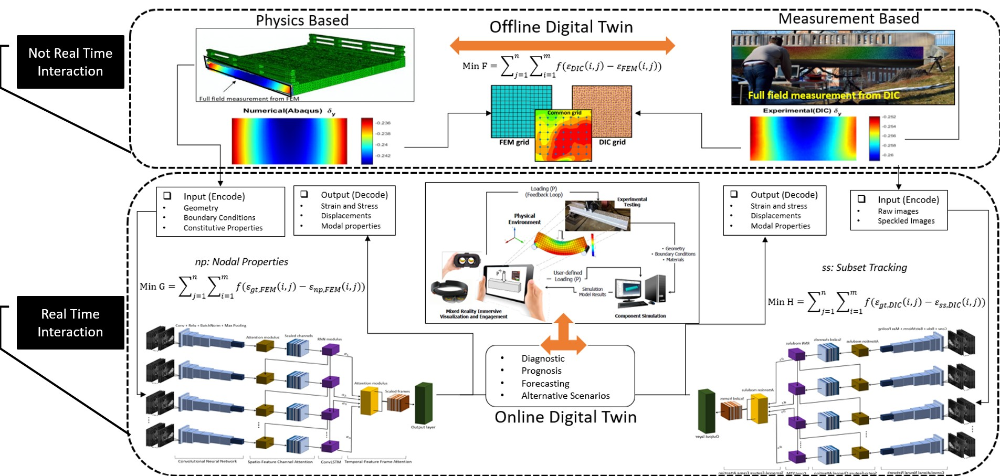

AI for Structural Engineering
Deep learning, engineered neural networks, transfer learning, and intelligent structural identification.
About me
Structural Engineering · AI · NDE · Digital Twins
I am a civil and structural engineering researcher developing data-driven and physics-informed methods for structural health monitoring, nondestructive evaluation, infrastructure inspection, digital twins, and intelligent sensing.
My work connects structural mechanics, computer vision, deep learning, finite element modeling, and sensor data to create practical tools for infrastructure assessment, damage detection, and structural decision-making.
Research Areas
Deep learning, engineered neural networks, transfer learning, and intelligent structural identification.
Full-field sensing, damage detection, structural identification, computer vision, and image-based diagnostics.
AI-assisted NDE interpretation, visual question answering, GPR data analysis, laser scanning, and automated inspection.
Physics-constrained learning for subsurface sensing and prediction, including electromagnetic-wave-informed modeling.
Adaptive digital twins, immersive structural visualization, AR/VR, and cyber-physical infrastructure systems.
Finite element model updating, bridge load rating, structural optimization, testing, and sensor-data integration.
Featured Research
Developed a PINN framework that incorporates electromagnetic wave propagation into neural-network training for subsurface-data prediction.
Developed a visual question answering approach for NDE image analysis using deep learning and natural-language generation.
Investigated AI-enabled real-time interaction between structural simulation, experiments, and immersive visualization environments.
Developed full-field image-based approaches using 3D digital image correlation, topology optimization, and laser scanning for structural identification and damage assessment.
Developed finite-element-model-driven strategies combining field measurements, bridge testing, and sensor data for load rating.
Research Demo
A short demonstration of my research using 3D digital image correlation for defect detection.
Research Gallery
Selected visual summaries of my research in artificial intelligence, nondestructive evaluation, structural sensing, deep learning, mixed reality, and adaptive digital twins.



Publications
Refer to Google Scholar to access to all papers.
CV
View or download my full CV for details of my education, research appointments, publications, and professional experience.
Experience
Turner-Fairbank Highway Research Center · Federal Highway Administration
University of Virginia · Engineering Systems and Environment
University of Massachusetts Lowell · Mechanical Engineering
University of Virginia · Engineering Systems and Environment
Education
Ph.D., Civil Engineering
University of Virginia
M.Sc., Civil Engineering
Sharif University of Technology
B.Sc., Civil Engineering
University of Tabriz
Technical Skills
Recognition
Contact
I am interested in research and professional opportunities involving structural engineering, AI, digital twins, structural health monitoring, computer vision, and nondestructive evaluation.